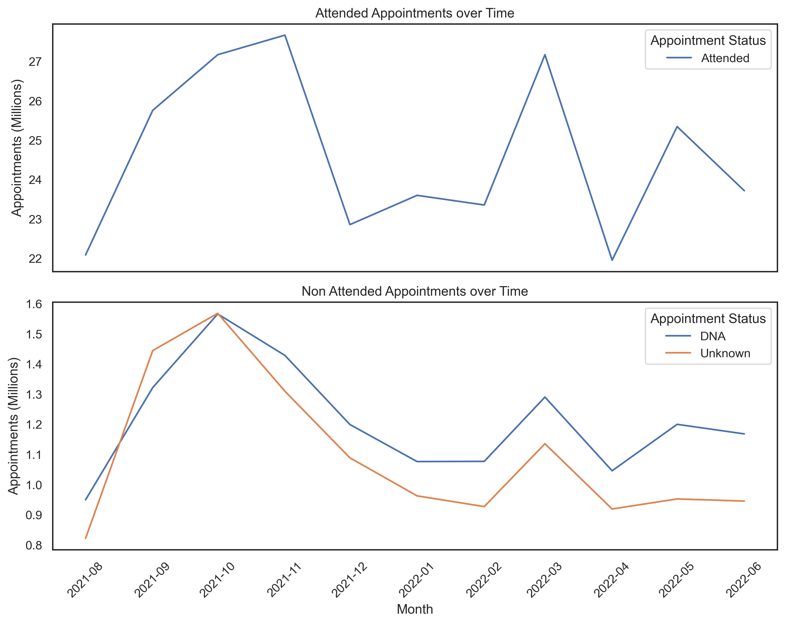
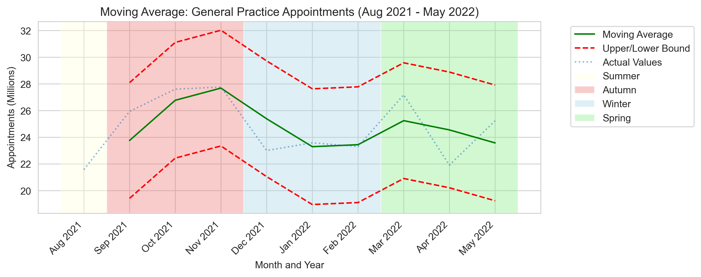
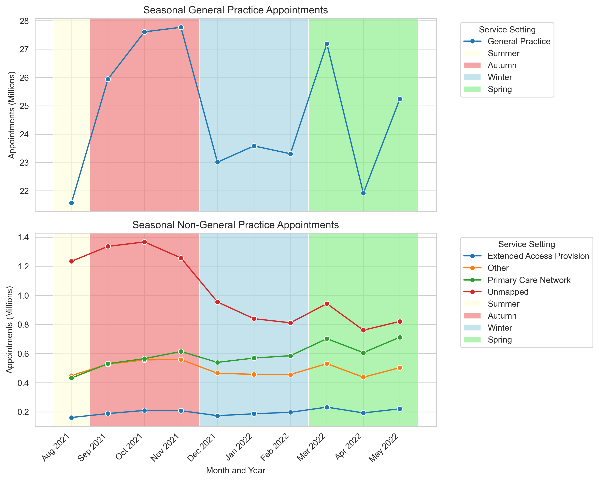
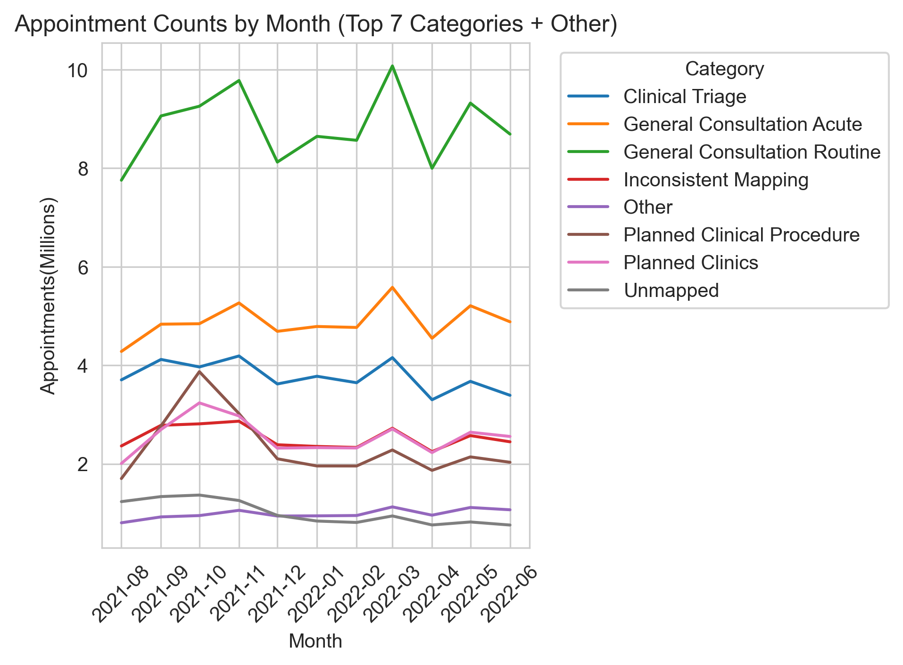

NHS Analysis Project
This project explored NHS capacity and utilisation, using publically available data.
The aim of this project was to advice on capacity, insights into missed appointments, social media engagment, and the use of different service settings within the NHS.
This project involved converting CSV's into dataframes with pandas, and creating visualisations with matplotlib and seaborn.
The data for this project consisted of 3 CSV files, containing over 1.5million rows of NHS appointment data.
Tools used:
- Jupyter Notebook
- Pandas
- Numpy
- Matplotlib
- Seaborn
A final PDF report was created to present the findings, and includes a technical appendix.
Download Full ReportExample Visualizations
This graph shows the number of appointments by status, and how many were attended vs not attended over time.
This graph shows the seasonality of appointments, by moving average with a 2 month window and upper and lower bounds.
This graph show appointments by service setting and plotted by season. Due to the difference in volumes, faceting was used to create a more detailed analysis.
This diplays appointments by national category. As there are 18 categories overall, the top 8 were found and diplsayed for ease of reading
Code Example
This block was used to find the top 5 sub ICB locations for missed appointments. This involved filtering the locations by missed appointments and ICB Codes.
The location names had to be retrieved from another dataframe, but the file sizes made merging resource intensive, so these were manually referenced
The second block generates the Seaborn bar plot, displayed once the button is clicked.
''' Determine the Top 5 Sub ICB Locations for DNA's Due to resource usage, df's have not been merged ''' #Find how many DNA's there are in ar DataFrame dna_count = (ar['appointment_status'] == 'DNA').sum() print(f"Number of 'DNA' occurrences: {dna_count}") #Find the top 5 ICB ONS Codes for DNA's top_5_dna = (ar[ar['appointment_status'] == 'DNA'] .groupby('icb_ons_code') .size() .reset_index(name='count_of_dna') .sort_values('count_of_dna', ascending=False) .head(5)) #Take ICB code and Location name from ad subset_ad = ad[['icb_ons_code', 'sub_icb_location_name']].drop_duplicates() #Cross reference to codes taken from ar codes = ['E54000057', 'E54000008', 'E54000050', 'E54000048', 'E54000051'] result = subset_ad[subset_ad['icb_ons_code'].isin(codes)][['icb_ons_code', 'sub_icb_location_name']] dna_locations = pd.merge(top_5_dna, result, on='icb_ons_code', how='left')
# Create a single figure plt.figure(figsize=(14, 10)) # Create the bar plot sns.barplot(x='count_of_dna', y='sub_icb_location_name', data=dna_locations, palette='Purples_d') plt.title('Top 5 Locations by DNA') plt.xlabel('DNA Count') plt.ylabel('Location') # Save and show the plot plt.tight_layout() plt.savefig('dna_plot.png', dpi=300, bbox_inches='tight') plt.show()